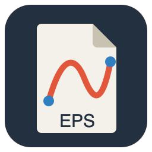
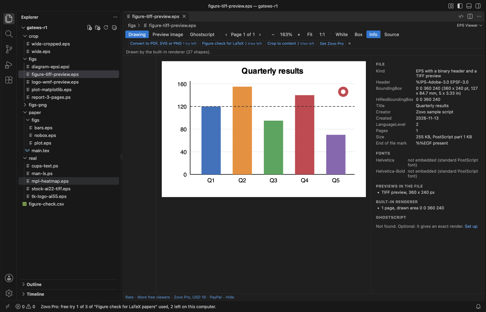

EPS Preview & PostScript
EPS Preview & PostScript, a VS Code extension by Zovo
EPS preview for VS Code, by Zovo. Click an .eps file and see the figure, with nothing to install: no Ghostscript, no Poppler, no command-line tools.
Free, MIT license. Needs VS Code 1.75.0 or newer. Extension ID zovo.zovo-eps-viewer, version 0.1.1.

Questions people ask
Is EPS Preview & PostScript free?
Yes. EPS Preview & PostScript is free and MIT licensed.
How do I install EPS Preview & PostScript?
Click "Install in VS Code" above, or search for zovo.zovo-eps-viewer in the Extensions view.
Free
The viewer needs no account or network.
- Opens
.eps,.epsi,.epsfand.psfiles. A built-in PostScript renderer draws the figure as vector shapes, so it stays sharp at any zoom. - Shows the preview image stored in the file at once: the TIFF or WMF preview of a binary EPS, or the EPSI bitmap.
- Info panel: BoundingBox in points, millimetres and inches, title, creator, date, LanguageLevel, pages, fonts and whether each one is embedded, bitmap resolution and color, and problems such as a missing BoundingBox.
- Multi-page PostScript documents get a page list. Zoom, fit, 1:1, white, checkerboard or dark background, and an outline of the BoundingBox.
- PostScript syntax colors, and Show PostScript Source, also for binary EPS files.
- Ghostscript is optional. When it is installed, the Ghostscript view gives an exact render. It is found on its own, never included or downloaded, and always runs with
-dSAFER.
Zovo Pro
Zovo Pro: USD 19 once. One payment unlocks the tools in every Zovo extension. Each tool has 3 free tries on your computer.
- Convert to PDF, SVG or PNG: one file or every EPS and PS file in a folder, PNG at the resolution you pick. Uses your Ghostscript when you have it, the built-in renderer when you do not.
- Figure check for LaTeX papers: every figure in a folder with its BoundingBox, fonts that are not embedded, low-resolution bitmaps, and the
.texline that includes it. Figures named in\includegraphicsbut missing are listed too. Save the report as Markdown or CSV. - Crop to content and fix the BoundingBox: measures what the figure really draws and saves a copy with a tight BoundingBox and the margin you pick. The original stays as it is.
How to use it
.eps,.epsiand.epsffiles open in the viewer when you click them..psfiles open in the text editor, so you can still edit them. ClickOpen Previewin the editor title bar, or right-click the file and pickOpen Preview.- The toolbar switches between
Drawing(built-in renderer),Preview image(stored in the file) andGhostscript. - Keys:
+and-zoom,0fits,1is actual size, Page Up and Page Down change the page. Ctrl or Cmd with the mouse wheel zooms; drag to pan.
What the built-in renderer draws
It runs the PostScript program itself: paths, fills, strokes, dashes, clipping, gray, RGB, CMYK, Separation and Indexed colors, images (including ASCII85, Flate, RunLength and LZW data, and JPEG), Type 3 fonts as their own shapes, and the file's procedures and dictionaries. In our tests, files from matplotlib, Adobe Illustrator (5.5 and 22), man -t and the macOS print system drew in full.
Text in fonts that are not embedded uses a system font of the same family, placed with the font's widths. Smooth shading, patterns and encrypted Type 1 font outlines are not drawn exactly; the status line says what was skipped, and the Ghostscript view draws everything. The renderer cannot read or write files and stops after a time limit (setting epsViewer.renderTimeLimit).
Settings
| Setting | Default | What it does |
|---|---|---|
epsViewer.defaultView | auto | What shows first: auto, drawing, preview or ghostscript. |
epsViewer.ghostscriptPath | empty | Full path of gs (or gswin64c.exe). Empty: look on the PATH and in the usual folders. |
epsViewer.renderTimeLimit | 20 | Seconds the built-in renderer may spend on one file. |
epsViewer.minImageDpi | 300 | Figure check: bitmaps below this resolution are flagged. |
epsViewer.maxFileSizeMB | 200 | Larger files open with a message instead of the viewer. |
epsViewer.showProTools | true | Show the Pro tools in menus and the toolbar. |
epsViewer.showSupportLinks | true | Show the small links at the bottom of the viewer. |
epsViewer.askForRating | true | Ask once for a rating, after the viewer has been useful a few times. |
Install Ghostscript (optional)
- macOS:
brew install ghostscript - Debian and Ubuntu:
sudo apt install ghostscript; Fedora:sudo dnf install ghostscript - Windows: the installer from the Ghostscript download page, then reload the window.
Then pick Ghostscript in the toolbar, or run EPS Viewer: Set Up Ghostscript to choose the program by hand. In a folder you have not marked as trusted, Ghostscript does not run.
Privacy
The extension makes no network requests and sends no telemetry. Files are read on your computer and never uploaded. Links in the footer and the Zovo Pro buttons open a web page only when you click them.
Install EPS Preview & PostScript
Click the button to open VS Code and install it, or press Ctrl+P (Cmd+P on macOS) in VS Code and run ext install zovo.zovo-eps-viewer.
Free, MIT license. Needs VS Code 1.75.0 or newer. Extension ID zovo.zovo-eps-viewer, version 0.1.1.
Source code and issues are on GitHub.
Zovo Pro and support
Zovo Pro: USD 19 once, every Zovo viewer. It turns on the Pro tools in this extension and in the other Zovo extensions you use. The free features stay free.
After a card payment your license key shows on the next page. Paste it with the command "Zovo Pro: Enter a key".
You can also support the work with no Pro:
Need your format supported?
Open a format request with a sample file, and I reply there whether it can be done. For USD 299 once, through this GitHub Sponsors tier, I add your file format or a missing feature to this extension, with tests, within 7 days.